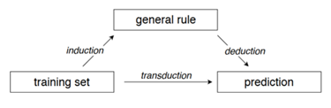

flowchart LR
A[Entradas / Input<br/>Datos] --> B[Proceso de Análisis<br/>Estadístico] --> C[Salidas / Output<br/>Información]
4 Trabajo Práctico 1: Estadística Descriptiva
Objetivos del Trabajo Práctico
El trabajo práctico tiene como objetivos: (1) Reconocer que el rol de la estadística, dentro de un proceso de investigación cuantitativa, provee métodos para obtener información a partir de datos ; (2) Clasificar correctamente las variables según su naturaleza y escala de medición; (3) Aplicar técnicas de análisis exploratorio de datos, incluyendo medidas de resumen y gráficos para series simples y agrupadas; (4)Reconocer las principales dimensiones de la descripción de datos: centro + forma + dispersión; y (5) Realizar lecturas y síntesis interpretativas a partir de las medidas de resumen y gráficos descriptivos.
ImportanteLectura Sugerida para el Trabajo Práctico
Se recomienda a los estudiantes consultar el libro «Apuntes de Bioestadística. Con ejercicios resueltos» para profundizar los conceptos teóricos y metodológicos desarrollados en este marco:
- Unidad 2: Introducción y Generalidades: Reflexionar sobre el Proceso de Investigación Cuantitativa y Modelación Estadística. Esta lectura nos da información acerca de la importancia del contexto en la interpretación de un resultado estadístico, en el marco de una investigación científica.
- Unidad 2: Población, Muestra y Variables: Consultar las definiciones de Población, Muestra, Unidades de Análisis y sobre todo, Clasificación de Variables y Escalas de Medición.
- Unidad 3: Estadística Descriptiva: Revisar los apartados de Análisis Exploratorio de Datos para Series Simples y Series Agrupadas, prestando atención sobre todo a la interpretación de las fórmulas, las medidas de resumen y gráficos descriptivos.
4.1 Introducción y Generalidades
4.1.1 Definición de Estadística
Desde una perspectiva práctico-procedimental, la Estadística es la parte del método científico que tiene por objeto la recolección, organización, análisis, interpretación y presentación de datos. Bajo un enfoque sistémico, los métodos estadísticos constituyen un proceso que transforma entradas (datos) en salidas (información).
Esta información se integra dentro del proceso de investigación cuantitativa para generar o actualizar conocimiento en contextos de incertidumbre. El proceso forma un ciclo de retroalimentación continua mediante la contrastación (validación, ampliación, modificación o refutación del conocimiento previo).

Desde un punto de vista conceptual, la estadística es la ciencia que permite aprender de los datos en contextos de incertidumbre. Su objetivo central es aislar la «señal» del «ruido» mediante la modelación estadística.
Modelo Estadístico: Representación matemática con componentes determinísticos y aleatorios para describir un proceso generador de datos, basado en ciertos supuestos acerca de dicho proceso.
4.2 Tipos de Problemas de Aprendizaje a partir de Datos
Según Vapnik (2000), el aprendizaje a partir de datos abarca tres tipos de problemas:
- Reconocimiento de patrones: Identificación de regularidades o características significativas para clasificar o categorizar observaciones.
- Estimaciones por regresión: Uso de relaciones matemáticas para predecir valores de una variable dependiente o realizar contrastes de hipótesis.
- Estimaciones de densidad: Estimación de la probabilidad de ocurrencia de diferentes valores en un rango determinado.
4.2.1 Criterios de Clasificación de la Información Estadística
La naturaleza de la información generada depende de los siguientes factores:
- Objetivos de la investigación:
- Estadística Exploratoria / Descriptiva: Busca descubrir relaciones o describir comportamientos de datos disponibles sin generalizar por fuera de la muestra.
- Estadística Inferencial: Permite contrastar hipótesis, estimar parámetros poblacionales o ajustar modelos generalizables. Incluye métodos explicativos (mecanismos causales) y predictivos (pronósticos).
- Tipo de investigación (intervención):
- Experimental: Intervención activa y deliberada; describe relaciones de causa/efecto.
- Observacional: Sin intervención activa; describe asociaciones entre variables.
- Semiexperimental: Combina elementos observacionales y experimentales.
- Naturaleza de la variable respuesta:
- Respuesta numérica: Requiere modelos de regresión (paramétricos o no paramétricos).
- Respuesta categórica: Requiere modelos de clasificación (métodos no paramétricos).
- Número de variables analizadas: Univariados, bivariados y multivariados.
- Relación Datos - Modelo - Predicción:
- Inductivo/Inferencial: Datos empíricos \(\rightarrow\) Regla general / Modelo teórico.
- Deductivo: Modelo teórico \(\rightarrow\) Evaluación de plausibilidad de predicciones.
- Transductivo/Predictivo: Datos empíricos \(\rightarrow\) Predicciones directas.


4.2.2 Bioestadística
La Bioestadística es la rama que estudia los criterios para la aplicación adecuada de los métodos estadísticos en las ciencias biológicas, agrícolas, ambientales y de la salud, caracterizadas por la elevada complejidad y variabilidad de los fenómenos biológicos.
4.3 Población y Muestra
4.3.1 Conceptos
- Población: Conjunto de elementos acotados en un tiempo y espacio determinados, con alguna característica común observable o medible. Se delimita formalmente para definir el alcance de la inferencia.
- Tamaño Poblacional (\(N\)): Número total de elementos de la población.
- Muestra: Subconjunto representativo de la población.
- Tamaño Muestral (\(n\)): Número de elementos incluidos en la muestra.
4.3.2 Tipos de Poblaciones y Muestreo
- Población Finita: Aquella cuyos elementos constitutivos pueden ser contados y es posible determinar \(N\).
- Población Infinita: Aquella en la que no es posible determinar el número total \(N\) mediante conteo.
- Muestreo Probabilístico vs. Oportunista: Para garantizar representatividad y medir el error de estimación se requieren métodos probabilísticos mediante marcos muestrales; no obstante, en biología se recurre frecuentemente a muestreos oportunistas por restricciones prácticas.
4.3.3 Unidades de Estudio
- Unidad de Observación (U.O.): Elemento individual en la muestra sobre el cual se realiza la medición, conteo o clasificación.
- Unidad de Análisis (U.A.): Objeto final del estudio sobre el cual se extraen las conclusiones inferenciales.
Nota
La Unidad de Observación (U.O.) y la Unidad de Análisis (U.A.) pueden o no coincidir según el diseño muestral.
4.4 Variables Estadísticas y Escalas de Medición
4.4.1 Definiciones
- Variable: Característica o atributo que puede adoptar distintos valores numéricos o categóricos a partir de un conjunto de valores posibles. Se denota con letras mayúsculas (\(X, Y\)).
- Realización / Dato (\(x_i\)): Valor específico que asume la variable en una unidad de observación (\(x_i, i=1, 2, \dots, n\)).
- Constante: Atributo cuyo valor permanece invariante entre las unidades observadas.
4.4.2 Clasificación por Naturaleza y Escala de Medición

4.4.2.1 Atributos de las Escalas de Medición
| Escala | Propiedades Operativas | Definición |
|---|---|---|
| Nominal | Clasificación | Clasifica en categorías mutuamente excluyentes sin orden implícito. |
| Ordinal | Clasificación, Orden | Establece un orden lógico o jerarquía entre categorías, pero no mide distancias. |
| Intervalo | Clasificación, Orden, Distancia | Medición numérica con cero arbitrario (no indica ausencia del atributo). |
| Razón | Clasificación, Orden, Distancia, Origen | Medición numérica con cero real (ausencia del atributo); admite todas las operaciones matemáticas. |
4.5 Estadística Descriptiva
Su objetivo es sintetizar y caracterizar los atributos de centralidad, variabilidad y forma de la distribución de los datos empíricos.


4.6 Análisis Exploratorio de Series Simples y Agrupadas
Realizar una lactura complementaria de la Unidad 3 del libro Apuntes de Bioestadística. Con ejercicios resueltos.
4.7 Estrategias de interacción con la IA
TipEstrategias de interacción con la IA
- Dilema del número de clases: Pedir a la IA que compare los resultados del número de clases para cualquier serie de 30 valores utilizando los métodos de Sturges, Scott y Freedman-Diaconis. Preguntar: “¿En qué situaciones preferiríamos una distribución más ‘suavizada’ (Sturges) frente a una que resalte más los picos de variabilidad local?”.
- Contraste de precisión (Muestra simple vs. Agrupada): Solicitar a la IA que explique por qué existe una diferencia (aunque sea mínima) entre la media aritmética de la serie simple y la media ponderada calculada a partir de las marcas de clase. Reflexionar sobre el concepto de que la marca de clase “asume” que los datos se distribuyen uniformemente dentro del intervalo.
- Razonamiento sobre la Mediana por Interpolación: Presentar a la IA la fórmula de interpolación para la mediana en variables continuas y pedirle que explique, mediante una analogía física, qué representan los componentes y por qué se multiplican por la amplitud.
- Gráficos acumulados: Solicitar a la IA que justifique por qué una variable discreta (como el recuento de huevos de barrenador) debe graficarse con un gráfico escalonado que muestre saltos o discontinuidades, mientras que una variable continua (como el arsénico) permite una ojiva de líneas rectas que asumen una transición suave entre límites.
- Análisis de la Moda en intervalos: Debatir con la IA sobre la sensibilidad de la clase modal. Preguntar: “Si cambiamos la amplitud de los intervalos en el ejemplo de arsénico en Tumbaya, ¿podría la moda desplazarse de intervalo? ¿Qué nos dice esto sobre la estabilidad de esta medida en datos agrupados?”.
- Simulación de sesgos por intervalos: Pedir a la IA que genere un escenario donde un investigador “manipula” visualmente un histograma aumentando excesivamente el número de clases hasta que cada barra tenga frecuencia 1, y discutir por qué esto anula el propósito del análisis de series agrupadas.
- Traducción de algoritmos de software: Preguntar a la IA cómo el argumento breaks en la función hist() de R o la opción de “Número de clases personalizado” en InfoStat afectan el cálculo automático de las frecuencias, comparándolo con el procedimiento manual.
4.8 Micro-ejercicios de aplicación (optativos)
Los siguientes micro-ejercicios te permitirán practicar los conceptos revisados en esta unidad. Puedes copiar y pegar las preguntas en un script de R local, o bien utilizar webR, que es la versión online de R, disponible en esta guía.
# =============================================================================
# MICRO-EJERCICIOS OPTATIVOS — Estadística Descriptiva
# =============================================================================
# -----------------------------------------------------------------------------
# I. POBLACIÓN, MUESTRA Y UNIDAD DE ANÁLISIS
# -----------------------------------------------------------------------------
# 1) Contexto: En la Reserva de Biosfera Laguna de Pozuelos habita una población
# de aproximadamente 800 vicuñas (Vicugna vicugna). Durante una jornada de
# esquila comunitaria (chaku) se arrean y capturan 40 individuos para medir
# el diámetro de su fibra.
# a) Identifique la población en estudio.
# b) Identifique la muestra y su tamaño (n).
# c) Identifique la unidad de análisis.
# Comente.
# 2) Contexto: Un equipo de investigación releva la altura de individuos de cardón
# (Trichocereus atacamensis) en un sector de la Quebrada de Humahuaca que
# contiene aproximadamente 1200 ejemplares. Se seleccionan al azar 60
# individuos para la medición.
# a) Identifique la población y la muestra.
# b) Identifique la unidad observacional.
# Comente.
# 3) Contexto: Se estudia el ataque de una plaga sobre cultivos de papa andina
# (Solanum tuberosum ssp. andigena) en la Quebrada de Humahuaca. De un total
# de 300 hectáreas cultivadas, un técnico selecciona 12 parcelas y, dentro
# de cada una, examina 20 plantas.
# a) Identifique la población en estudio.
# b) Identifique la unidad de análisis y la unidad observacional.
# c) Indique si la variable de interés surge a nivel de parcela o de planta.
# Comente.
# 4) Contexto: Un equipo de limnología estudia la calidad del agua de los
# bofedales altoandinos de la cuenca de la Laguna de Pozuelos. De un total de 25
# bofedales en la cuenca, se seleccionan 8 al azar y se mide el pH del agua
# en cada uno.
# a) Identifique la población y la muestra.
# b) Identifique la unidad de análisis.
# Comente.
# 5) Contexto: Un investigador afirma:
# "Coloqué 5 cámaras trampa en el Parque Nacional Calilegua y cada cámara
# registró en promedio 15 fotografías de puma (Puma concolor) durante el
# mes, por lo tanto mi tamaño muestral es n = 75."
# a) Analice la afirmación del investigador.
# b) Identifique cuál es la verdadera unidad de análisis del estudio.
# c) Explique la consecuencia de confundir las fotografías repetidas de un
# mismo individuo (pseudorréplicas) con el tamaño muestral real.
# Comente.
# 6) Contexto: Se evalúa el efecto de la clausura al pastoreo sobre la
# regeneración de bosques de queñoa (Polylepis australis) en lel Bosque Montano
# de las Yungas Jujeñas. Un investigador instala 5 parcelas clausuradas y, dentro de cada
# una, cuenta el número de plantines en 4 subparcelas de 1 m².
# a) ¿Cuál es la unidad de análisis correcta: la parcela clausurada o la
# subparcela?
# b) Explique por qué tratar cada subparcela como una réplica independiente
# podría subestimar la variabilidad real del estudio.
# Comente.
# -----------------------------------------------------------------------------
# II. ESCALAS DE MEDICIÓN
# -----------------------------------------------------------------------------
# 7) Contexto: En un estudio de termorregulación de Liolaemus sp. en la Puna,
# se registra la temperatura corporal de un individuo asoleándose: 15 °C
# en la mañana y 30 °C al mediodía.
# Situación: un estudiante afirma: "El lagarto tiene exactamente el doble
# de temperatura corporal al mediodía que en la mañana."
# Comente.
# 8) Contexto: Se mide la precipitación anual (mm) en dos sitios del NOA: uno
# recibe 400 mm y otro 800 mm.
# Situación: un investigador afirma: "El segundo sitio recibe exactamente
# el doble de precipitación que el primero."
# a) Comente si esta afirmación es válida.
# b) Compare con el caso de la temperatura en °C del ejercicio anterior:
# ¿por qué en este caso sí es correcto hablar de "el doble"?
# 9) Contexto: Se clasifica el estado de conservación de poblaciones de
# Vultur gryphus según las categorías de la UICN: Preocupación menor,
# Casi amenazada, Vulnerable, En peligro, En peligro crítico.
# Situación: un investigador afirma: "Una población 'En peligro crítico'
# está exactamente el doble de amenazada que una 'Vulnerable'."
# Comente.
# 10) Contexto: Se registra el tipo de cobertura vegetal dominante en sitios
# de muestreo de la Puna jujeña: Pastizal, Bofedal, Roquedal.
# Situación: un estudiante afirma: "El bofedal representa un nivel de
# cobertura mayor que el roquedal."
# Comente, identificando la escala de medición de la variable.
# -----------------------------------------------------------------------------
# III. SERIES SIMPLES — MEDIDAS DE RESUMEN
# -----------------------------------------------------------------------------
# 11) Se midió la longitud del ala (mm) de 10 individuos de aguilucho común
# (Geranoaetus polyosoma) capturados:
ala_aguilucho = c(365, 372, 358, 380, 369, 374, 361, 377, 366, 371)
# a) Identifique el tipo de variable y su escala de medición.
# b) Calcule la media y la mediana.
# c) Calcule el desvío estándar muestral.
# d) Interprete
# Su código aquí:
# 12) Se midió el diámetro medio (cm) de 8 individuos de yareta
# (Azorella compacta) en laderas rocosas de la Puna:
diametro_yareta = c(85, 102, 78, 95, 110, 88, 92, 99)
# a) Calcule el coeficiente de variación (cv_x) manualmente.
# b) Interprete si la muestra es homogénea o heterogénea.
# Su código aquí:
# 13) Se registró el peso (g) de 12 huevos de cóndor andino (Vultur gryphus)
# recolectados en un programa de cría en cautiverio:
peso_huevo_condor = c(280, 265, 290, 275, 268, 285, 272, 278, 283, 269, 276, 288)
# a) Calcule el rango (range()) y la amplitud (r_x, manual).
# b) Calcule el primer y tercer cuartil con quantile().
# c) Interprete
# Su código aquí:
# 14) Se registró la duración (segundos) de despliegues territoriales de
# machos de Liolaemus sp. observados en la Quebrada de Humahuaca:
despliegue_liolaemus = c(8, 12, 6, 15, 9, 11, 7, 14, 10, 13, 9, 16)
# a) Calcule la media y el desvío estándar.
# b) Calcule el coeficiente de asimetría con skewness() de {moments}.
# c) Interprete el signo del coeficiente obtenido.
# Su código aquí:
# 15) Se midió la concentración de oxígeno disuelto (mg/L) en 10 puntos de un
# arroyo de montaña de las Yungas jujeñas:
oxigeno_arroyo = c(7.2, 6.8, 7.5, 6.9, 7.1, 8.0, 6.5, 7.8, 7.0, 7.4)
# a) Calcule la media y la mediana.
# b) Calcule la curtosis con kurtosis() de {moments}.
# c) Interprete el grado de concentración de los datos alrededor de la media.
# Su código aquí:
# 16) Se midió la longitud del pico (mm) de 9 individuos de picaflor puneño
# (Oreotrochilus sp.) capturados con red de niebla:
pico_picaflor = c(23.5, 24.1, 22.8, 24.6, 23.2, 24.0, 23.8, 22.9, 24.3)
# a) Aplique s_simple() de {resumiR} para obtener todas las medidas de
# resumen de una vez.
# b) Identifique el valor del coeficiente de variación en la salida.
# c) Interprete
# Su código aquí:
# 17) Se registró el peso de fibra esquilada (g) por vicuña en una jornada de
# esquila comunitaria de la Puna jujeña:
fibra_vicuna = c(220, 245, 198, 260, 235, 210, 250, 228, 242, 205, 233, 218)
# a) Calcule la media, la mediana y el desvío estándar.
# b) Calcule el cv_x (manual) e interprete la homogeneidad del rendimiento
# de fibra en la jornada.
# Su código aquí:
# 18) Se midió la altura (m) de 10 individuos de queñoa (Polylepis australis)
# en un bosque relictual de la Puna:
altura_quenoa_bosque = c(2.4, 3.1, 2.8, 3.5, 2.6, 3.0, 2.9, 3.3, 2.7, 3.2)
# a) Calcule el cv_x (manual).
# b) Compare mentalmente con el cv obtenido en el ejercicio 12 (yareta):
# ¿cuál de las dos especies presenta mayor variabilidad relativa?
# Su código aquí:
# -----------------------------------------------------------------------------
# IV. SERIES AGRUPADAS — VARIABLES CONTINUAS
# -----------------------------------------------------------------------------
# 19) Se midió el pH del agua en 20 bofedales altoandinos de la cuenca de la
# Laguna de Pozuelos:
ph_bofedales = c(6.8, 7.2, 7.5, 6.9, 7.1, 7.8, 6.6, 7.4, 7.0, 7.3,
6.7, 7.6, 7.2, 6.9, 7.5, 7.1, 6.8, 7.7, 7.0, 7.3)
# a) Aplique s_agrupada() de {resumiR} para construir la tabla de
# frecuencias por intervalos.
# b) Identifique el intervalo de clase más frecuente.
# Su código aquí:
# 20) Se midió el diámetro a la altura del pecho (DAP, cm) de 20 individuos de
# algarrobo negro (Prosopis nigra) en un relicto de bosque chaqueño:
dap_algarrobo = c(18, 22, 25, 19, 21, 28, 17, 24, 20, 26,
19, 23, 27, 18, 22, 25, 20, 24, 21, 26)
# a) Aplique s_agrupada() y obtenga la tabla de frecuencias.
# b) Calcule la media y el desvío estándar a partir de la salida.
# Su código aquí:
# 21) Se midió la turbidez del agua (NTU) en 20 muestras de una laguna
# altoandina utilizada como bebedero de fauna silvestre:
turbidez_laguna = c(12, 18, 25, 15, 20, 30, 10, 22, 17, 28,
14, 24, 19, 11, 26, 16, 21, 13, 27, 23)
# a) Aplique s_agrupada() y obtenga la tabla de frecuencias.
# b) A partir de la tabla, elabore una conclusión sobre la distribución de
# los datos.
# Su código aquí:
# 22) Se midió la temperatura corporal (°C) de 20 sapos andinos (Rhinella
# spinulosa) activos en un bofedal de la Puna jujeña:
temp_corporal_sapo = c(13.5, 15.2, 16.8, 14.1, 15.5, 17.2, 12.9, 16.0, 14.5, 17.5,
13.8, 16.3, 15.0, 12.5, 17.0, 14.8, 15.8, 13.2, 16.5, 15.3)
# a) Aplique s_agrupada() y obtenga la tabla de frecuencias.
# b) Identifique el intervalo modal de la distribución.
# Su código aquí:
# NOTA: EN TODOS LOS EJERCICIOS, CONSTRUYA EL HISTOGRAMA DE FRECUENCIAS Y EL
# GRÁFICO DE OJIVA.
# -----------------------------------------------------------------------------
# V. SERIES AGRUPADAS — VARIABLES DISCRETAS
# -----------------------------------------------------------------------------
# 23) Se registró el número de crías por camada en 25 hembras de zorro
# colorado (Lycalopex culpaeus) monitoreadas en la Quebrada de Humahuaca:
crias_zorro = c(3, 4, 2, 5, 3, 4, 3, 2, 4, 5,
3, 4, 2, 3, 4, 5, 3, 2, 4, 3,
4, 3, 5, 2, 4)
# a) Construya la tabla de distribución de frecuencias con table().
# b) Identifique la moda de la distribución.
# Su código aquí:
# 24) Se registró el número de huevos por puesta en 30 hembras de sapo andino
# (Rhinella spinulosa) de un bofedal altoandino:
huevos_sapo = c(0, 1, 2, 1, 0, 3, 2, 1, 0, 2,
1, 4, 2, 1, 0, 3, 2, 1, 0, 2,
1, 3, 2, 0, 1, 2, 4, 1, 0, 2)
# a) Construya la tabla de frecuencias absolutas y relativas
# (prop.table()).
# b) Calcule la media aritmética ponderada de huevos por puesta.
# Su código aquí:
# 25) Se registró el número de individuos por bandada en 20 avistamientos de
# parina grande (Phoenicoparrus andinus) en las Salinas Grandes de Jujuy:
bandada_parina = c(8, 12, 5, 20, 15, 9, 25, 11, 7, 18,
14, 6, 22, 10, 16, 9, 13, 19, 8, 17)
# a) Construya la tabla de frecuencias agrupando en intervalos si lo
# considera necesario.
# b) Calcule los cuartiles (quantile()) e interprete el valor de Q3.
# Su código aquí:
# 26) Se registró, en 30 trampas Sherman instaladas en un transecto de
# micromamíferos del Parque Nacional Calilegua, el número de capturas por
# trampa durante una noche de muestreo:
capturas_trampa = c(0, 1, 0, 2, 0, 0, 1, 0, 3, 0,
1, 0, 0, 2, 0, 1, 0, 0, 1, 0,
0, 2, 0, 1, 0, 0, 3, 0, 1, 0)
# a) Construya la tabla de frecuencias absolutas y la frecuencia relativa
# acumulada.
# b) A partir de la frecuencia acumulada, responda: ¿qué porcentaje de
# las trampas registró como máximo 1 captura?
# Su código aquí:
# 27) Se registró el número de brotes nuevos por plantín en 25 individuos de
# queñoa (Polylepis australis) reforestados en la Puna jujeña:
brotes_quenoa = c(1, 2, 0, 3, 1, 2, 1, 0, 2, 4,
1, 2, 3, 0, 1, 2, 1, 3, 0, 2,
1, 2, 0, 1, 3)
# a) Construya la tabla de distribución de frecuencias completa (absoluta,
# relativa, acumulada y relativa acumulada).
# b) Redacte una breve interpretación sobre el vigor de rebrote de los
# plantines reforestados.
# Su código aquí:
# -----------------------------------------------------------------------------
# VI. GRÁFICOS PARA VARIABLES DISCRETAS
# -----------------------------------------------------------------------------
# 28) A partir del vector 'huevos_sapo' (ejercicio 24), construya:
# a) Un gráfico de bastones para la frecuencia absoluta.
# b) Un gráfico escalonado para la frecuencia relativa acumulada.
# Su código aquí:
# 29) A partir del vector 'crias_zorro' (ejercicio 23), construya un gráfico
# de bastones para la frecuencia relativa (fri) e interprete cuál es la
# cantidad de crías por camada más común en la población monitoreada.
# Su código aquí:
# 30) A partir del vector 'bandada_parina' (ejercicio 25), construya un
# gráfico de bastones para la frecuencia absoluta y un gráfico escalonado
# para la frecuencia acumulada. Interprete el tamaño de bandada por debajo
# del cual se concentra el 50% de los avistamientos.
# Su código aquí:
# =============================================================================